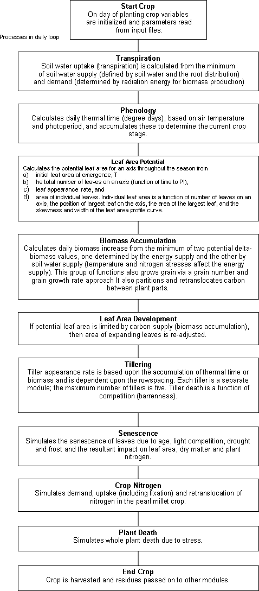
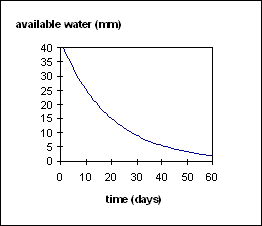
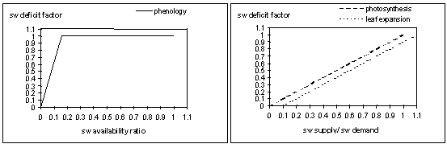
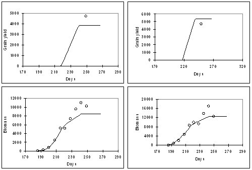
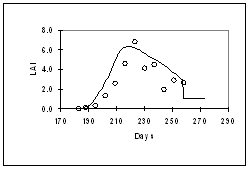
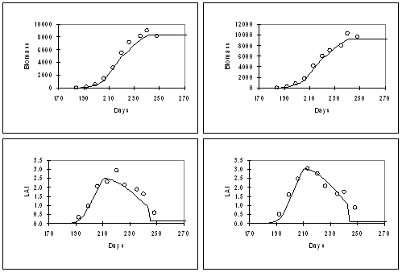
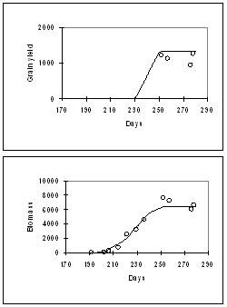

MILLET MODULE SCOPE
The millet module simulates the growth and development of a pearl millet crop in a daily time step. The module is specifically designed to deal with the tillering nature of the millet crop.
Each axis of the crop is considered to be a different crop, and the competition for resources between the axes is simulated analogous to an intercrop. Pearl millet growth responds to climate (temperature, rainfall, radiation), soil water supply (from soilwat2 module), and soil nitrogen (from soiln2 module)and returns information on soil water and soil nitrogen to the soilwat2 and soiln2 modules on a daily basis for resets of these systems.
Information on crop cover is also provided to the soilwat2 module to calculate evaporation rates and runoff. Pearl millet stover and root residues are passed from millet to the residue2 and soiln2 module respectively at harvest of the millet crop.
A list of the module outputs is provided in the ‘Millet module outputs' section towards the end of the document. The module simulates biomass (above and below ground), grain yield, leaf area development, N-contenets for individual plant parts, and yield components, all on a daily time step for individual axes.
MILLET MODULE HISTORY
The module was adapted from CERES-MAIZE, and is currently very similar to the Crop template in APSIM. The major difference with any other module in APSIM is that it simulates the growth and development of individual tillers, by considering the entire crop as an intercrop of the different axes. The module has been parameterised based on data from experiments conducted at the ICRISAT research station at Patancheru , India , under optimum growing conditions, covering a range of plant densities and genotypes (van Oosterom et al., 2001a and b). The module adequately predicts biomass, grain yield, and LAI across a range of plant densities, photoperiods, and genotypes. However, all the validation data sets were obtained from experiments conducted at Patancheru.

MILLET MODULE COMPONENTS
Phenology
There are 11 crop stages and ten phases (time between stages) in the millet module. Commencement of each stage is determined by accumulation of thermal time, except for sowing to germination which is driven by soil moisture. Each day the phenology routines calculate today's thermal time (in degree days) from 3-hourly air temperatures interpolated from the daily maximum and minimum temperatures. Thermal time is calculated using 10°C, 33°C, and 47°C as the base, optimum, and maximum temperature, with linear interpolations between these points. The eight 3-hourly estimates are averaged to obtain the daily value of thermal time. These daily values are summed into a thermal time sum which is used to determine the duration of each phase. Between the stage of emergence and flag leaf, the calculated daily thermal time is reduced by water or nitrogen stresses, resulting in delayed phenology when the plant is under stress. The duration and timing of most crop phases are determined by genotype- and axis-specific, fixed thermal time values input in the millet.par file. Sowing to germination is dependent on soil water levels; the phase germination_to_emergence includes an effect of sowing depth on the thermal time target; and the phase between end_of_ juvenile and floral initiation is determined by a cultivar's photoperiod (daylength) sensitivity - note that pearl millet is a short-day plant. The crop phases from germination to maturity and their thermal time duration for cv. BJ104 (main shoot) are listed below.
tt(germ to emerg) = 10.7 °Cd+ (sowing depth * 1.17) °Cdays (sowing depth in mm)
tt(emerg_end_juvenile) = 239 °Cdays
tt(end_juvenile_floral-intiation) = 112 * active photoperiod °Cdays (base photoperiod 12.9 h)
tt(emergence_to_flag leaf) = leaf number * 36.4 °Cdays
tt(flagleaf_to_flowering) = 66.1 °Cdays
tt(flowering_to_start-grainfill) = 80 °Cdays
tt(flowering_to_maturity)= 457 °Cdays
tt(maturity to harvest-ripe) = 1 °Cdays
The period between flowering and maturity is divided into three phases. The first phase, which covers the period from flowering to the start of grain filling, is genotype-specific (see above). The third phase is the period from end of grain filing until maturity, and is set to 5% of the total period. The actual grain growth phase is finally calculated as the difference between the duration of the total period and the other two phases.
The final leaf number on the main shoot is calculated as the sum of the number of leaves present in the seed (four) and the product of the time from germination to end juvenile and the leaf initiation rate (27.2 °Cd/leaf). For tillers, however, leaf number is estimated from the leaf number on the main shoot, as detailed data on time from initiation to end juvenile are not available for tillers. In general, tiller 1 (which appears from axil of leaf 3) has 4 leaves less than the main shoot.
Biomass accumulation (Photosynthesis)
Each day two estimates of the daily biomass production are calculated, one limited by available water for transpiration (eqn. 1), and the other limited by radiant energy (eqn. 2). The minimum of these two estimates is the actual biomass production for the day
dlt_dm_transp = sw_supply_sum * millet_transp_eff (1)
In this equation, sw_supply_sum is the total water supply over all soil layers where roots are present. Transpiration efficiency (TE) is derived from the TE coefficient and the vapour pressure deficit (vpd), which in turn is estimated from daily temperatures.
dlt_drymatter_potential = rue *radiation_interception (2)
Radiation use efficiency (RUE) is calculated as:
rue = rue(current_phase) * millet_rue_reduction (3)
rue(current_phase) is 1.9 before anthesis and 1.4 thereafter. The rue reduction is a factor that incorporates temperature and nitrogen stresses. Radiation interception is a function light interception by the crop and daily radiation.
Biomass partitioning
Daily biomass production is partitioned to different plant parts; the ratios depend on the crop stage.
Roots
Roots are grown daily in a fixed proportion to the tops production. This proportion (root shoot ratio) is specified for each growth stage and declines from 1.0 beforel panicle initiation to 0.0 from the start of grain filling onwards:
eme juv PI flag flow
1 1 0.33 0.33 0.087
Between emergence and panicle initiation , 67% of the biomass is allocated to the leaves, and 33% to the stems, which include the leaf sheath.
Between panicle initiation and flag leaf , stem elongation and flower development start. Therefore, partitioning to leaves declines linearly from 67% at panicle initiation to 0% at flag leaf. If the amount of carbon partitioned to leaves is more than is required for the calculated increase in leaf area (the leaves have a maximum thickness) then the residual is partitioned to flowers and stems:
dlt_dm_green(flower) = (dlt_dm_axis - dlt_dm_green(leaf)) * frac_stem2flower (4)
where frac_stem2flower is set to 0.19.
dlt_dm_green(stem) = dlt_dm_axis - (dlt_dm_green(leaf) + dlt_dm_green(flower)) (5)
If the carbon partitioned to leaves is insufficient to grow the potential increase in leaf area, leaf area increase is reduced (see leaf area development section).
Between flag leaf and start of grain filling, only stems and flowers grow. It is assumed that 19% of the produced dry matter is allocated to flowers and 81% to stems.
Between the start of grain filling and maturity, biomass is partitioned to grains, whereas stems will continue growing if they can. Grain demand for carbohydrate (biomass) is driven by grain number and grain growth rate. Grain number is a function of the rate of dry matter accumulation between the flag leaf stage and the start of grain filling. Grain growth rate is limited by temperature and drought stress. It is genotype specific and thus accounts for genotypic differences in grain mass and harvest index.
Biomass retranslocation
If the grain demand for carbohydrate cannot be met through partitioning of daily biomass production, it is retranslocated from other plant parts to meet (if possible) this grain demand. The carbohydrate in stem and leaf that is available for transfer, is calculated from the difference between potential and minimum weight for stem and leaf. Dry matter is first translocated from the stems; if not all the demand can be met, the remaining dry matter will be translocated from the leaves.
Leaf development
Potential leaf area. Potential crop leaf area is simulated from the area of individual leaves. Leaf area might be reduced if insufficient dry matter is produced in the subsequent routine on biomass accumulation.
First, leaf area is initialised at emergence and the final leaf number (on an axis) is calculated. Final leaf number is calculated at panicle initiation, but an approximate number is set at germination to allow other calculations to proceed until the correct number is known. The number of fully expanded leaves throughout the season is calculated from the appearance rate of fully expanded leaves, which is set at 36.4 °Cdays. An adjustment in leaf number is made to account for the area of the expanding leaves. Individual leaf area is calculated from a cubic function:
Y=Y 0 exp(a(X-X 0 ) 2 +b(X-X 0 ) 3 ) (6)
where Y = mature leaf area of individual leaf, Y 0 = mature area of largest leaf, X 0 = position of largest leaf, a = empirical constant determining the breadth of the leaf area profile curve, b = empirical constant determining the skewness of the leaf area profile. The four coefficients (X 0 , Y 0 , a, b) are functions of final leaf number. Parameter Y 0 is genotype-, density-, and axis-specific, whereas the other parameters are mainly axis-specific.
Because of sensitivity of cell expansion to water deficits, leaf area development is reduced under drought stress.
Actual leaf area . The actual LAI is less than the potential if there is not sufficient biomass partitioned to leaves on that day. The maximum specific leaf area (sla_max) defines the maximum leaf area (m 2 ) that can be expanded per gram of leaf biomass. The maximum SLA is set to 650 cm 2 /g 1 if LAI (for an individual axis) < 2, and declines linearly to 450 cm 2 /g 1 if LAI (for an individual axis) drops from 2.0 to 5.0.
Leaf senescence. The number of senesced leaves on an axis is a linear function of time, although the slope of the function is higher before flag leaf stage (0.0167 leaves/°Cd) than after (0.0120 leaves/°Cd). The slopes are independent of genotype and axis, but the onset of senescence is later in tillers than in the main shoot.
The senesced leaf area (as a function of age) for each axis is calculated from the senesced leaf number. In addition, senesced leaf area is calculated as a function oflight competition, water stress, and temperature stress. The maximum of these four is used as the actual leaf area that has sensesced during that particular day.
Tillering
Tiller appearance . Tillering starts at 150 o Cd, at a rate of 34 o Cd per tiller. Tillers may appear until flag leaf stage, but the maximum tiller number is set to 5. A switch gives the option to make tillering a function of thermal units or dry matter. At the moment, it is driven by thermal units. The rate of tiller appearance is not dependent on genotype, as genotypic differences in tillering are a result of differences in tiller survival, rather than tiller appearance.
Tiller death . Tillers that capture insufficient resources to produce a panicle are killed at the start of grain filling. The mechanism employed is barrenness, a condition where the tiller will not set any grain, because the average growth rate between flag leaf and start grain filling is below a critical value, which is currently set at 0.10 g/plant/day.
Regrowth
There are no regrowth routines in millet
Water uptake
To determine the amount of water supply to the crop on any day, first the total available water above the lower limit for all soil layers with roots is summed (eqn. 7). If roots are only partially through a layer, available soil water is scaled to that portion that contains roots. The kl constant (value differs for each soil layer) is then used to limit the amount of water available on any day (eqn. 8). The kl factor is empirically derived, incorporating both plant and soil factors which limit rate of water uptake. Figure 1 shows how kl limits water uptake as soil water approaches the lower limit.
do layer = 1, deepest_layer (do loop to calculate available water for all layers)
sw_avail = sw(layer) - ll (layer) (7)
sw_supply(layer) = sw_avail * kl (layer) (8)

Figure 1:Relationship between water availability and rate of water extraction as determined by the kl value. Soil water demand is calculated as in the ‘biomass accumulation' section above where potentail biomass production is a function of light interception and rue (eqn. 3). This potential biomass production is converted to water demand using transpiration efficiency. sw_demand = dlt_dm_pot / millet_transp_eff (9) Water uptake is the minimum of the supply and demand.
Water deficits affecting plant growth
Soil water deficit factors are calculated to simulate the effects of water deficits on different plant growth processes. Three water deficit factors are calculated which correspond to three plant processes each having different sensitivity to water stress: photosynthesis (photo), phenology (pheno), and leaf-expansion (expansion). The effect of water deficits on phenology is a function of the water availability ratio, which is calculated by dividing the available soil water (soil water (sw) - lower limit (ll)) by the potential available soil water (drained upper limit (dul) - lower limit (ll)) (Fig 2a). A factor of 0 is complete stress and 1 no stress. For photosynthesis and leaf expansion , the effect of water deficits is a function of the soil water demand ratio, which is calculated as the soil water supply divided by the demand (Fig. 2b). The relationships in Fig. 2b reflect the greater sensitivity of leaf expansion (as compared to photosynthesis) to drought.

Figure. 2 a: Soil water deficit factor for phenology as a function of the soil water availability ratio. b) soil water deficit factors for photosynthesis and leaf expansion as a function of soil water supply/demand ratio.
Nitrogen uptake and retranslocation
In order to calculate nitrogen demand today, first potential biomass production is re-calculated unlimited by water, nitrogen or temperature i.e. as a function of rue and radiation-interception (eqn. 3). This dry matter (biomass) is then partition into plant parts according to their current relative weights. The millet module has a defined minimum, critical and maximum N concentration for each plant part. Demand for nitrogen in each part attempts to maintain nitrogen at the critical (non stressed) level. Nitrogen demand on any day is the sum of the demands from the pre-existing biomass of each part required to reach critical N content, plus the N required to maintain critical N concentrations in today's potentially assimilated biomass. A nitrogen uptake maximum is defined as the nitrogen uptake required to bring all plant part N contents to the maximum allowable concentration. Nitrogen supply is the sum of nitrogen available via mass flow (eqn. 10) and by diffusion (eqn. 11). no3_massflow (layer) = no3_conc * delta_sw (layer) (eqn. 10) no3_diffusion (layer) = no3_conc * sw_avail_frac (eqn. 11) where sw_avail_frac is ratio of extractable soil-water over total soil-water. The layer values are summed to root depth. If nitrogen demand cannot be satisfied by mass flow then it is supplied by diffusion. Uptake of N above the critical concentration can only occur through mass flow. Excess N can be stored in plant parts as concentration above the critical N-concentration but below the maximum concentration. Nitrogen available for uptake is distributed to plant parts in proportion to their individual demands. Nitrogen for grain is retranslocated from other plant parts and is thus not directly taken up from the soil or atmosphere to meet grain demand. Nitrogen is available for retranslocation from all parts except grain and roots; all other plant parts will translocate nitrogen until they reach their defined minimum N concentration. Grain nitrogen demand is again driven by critical N content but this demand is lowered if the plant is under N stress. Grain N demand is also affected by temperature and water stress using eqns. 12 and 13 below: N_grain_temp_fac = 0.69 + 0.0125 * aver_temp (eqn. 12) N_grain_sw_fac = 1.125 - 0.125 * millet_swdef (expansion) (eqn. 13) The greatest of these two factors is multiplied by the previously calculated N demand i.e. if temperature is high or drought occurs, the N demand will be increased above the level required to reach the critical N concentration.
N fixation
No N fixation is assumed to occur (N fixation rate = 0.0). Nitrogen deficits affecting plant growth N availability factors (0-1) are calculated for the following processed: 1) grain N potential, 2) photosynthesis, 3) leaf senescence, grain N concentration, and cell expansion, 4) grain number. The N-concentration ratio which is calculated for the stover (stem + leaf) in eqn 14 is used as a measure of N stress: N_conc_ratio = (N_conc_stover - N_conc_stover_min) / (N_conc_stover_crit - N_conc_stover_min) (eqn.14) Different constants are used to convert this ratio to a deficit factor for each of the processes: N_def = N_fact_(process) * N_conc_ratio (eqn. 15) where N_factor equals 1.25 (photosynthesis), 1.0 (grain concentration), 10.0 (phenology). As lower values of N_deficiency indicate more stress, phenology is least sensitive to nitrogen deficiency and grain N the most.
Root growth and distribution
Root depth is initialised at 110 mm. Between emergence and grain filling, the increase in root depth is a daily rate (20 mm/day) multiplied a soil water availability factor. Root depth is constrained by the soil profile depth. Growth of root biomass is unrelated to depth and is as described in the ‘biomass partitioning' section above. Roots are not senesced during the life of the crop, but are incorporated in the soiln2 module at harvest and distributed as fresh organic matter in the profile according to an exponential relationship of depth and root biomass.
Temperature stress
There are no generic temperature factors, as for water and nitrogen stress, but as discussed in sections above temperature does influence grain N content, rate of senescence and radiation use efficiency (rue).
Plant death
All or some of the plants can be killed due to a variety of stresses; If the crop hasn't germinated within 40 days of sowing, due to lack of germinating moisture, all plants are killed. If the crop does not emerge with 150 o Cdays of germination, because it was sown too deep, then all plants are killed. If crop is past floral initiation and LAI = 0, then all plants are killed due to total senescence. If the cumulative phenological water stress factors exceed 99, all plants are killed due to water stress prolonging phenology. In addition, a fraction of the total number of plants can die due to: • high soil surface temperatures immediately following emergence. • drought stress, if a critical leaf number (set to 10) has not yet been reached. • barrenness at the start of grain filling.
Detachment
The detachment routines in millet are disabled in the current code.
MILLET MODULE PARAMETERISATION
Crop lower limit and kl values are need for each soil layer extraction
icrisat_alf1.millet.parameters
ll = 0.146 0.207 0.244 0.236 0.218 0.173 0.173 (mm/mm) ! millet lower limit
kl = 0.120 0.120 0.120 0.100 0.060 0.055 0.030 () ! rate of soil water extraction extraction
icrisat_alf2.millet.parameters
ll = 0.066 0.090 0.117 0.123 0.129 0.137 0.148 (mm/mm) ! lower limit extraction
jodhpur_aridisol.millet.parameters
ll = 0.040 0.043 0.043 0.043 0.040 0.040 0.040 (mm/mm) ! millet lower limit
kl values here are same as for icrisat_alf1. Needs to be changed for sandy soil texture of soil at Jodphur.
Phenology parameters needed for each cultivar:
default.millet.bj104
tt_emerg_to_endjuv = 239.4 (°Cd) ! TT from emergence to end of juvenile phase
est_days_emerg_to_init = 17 (d) ! estimated days from emergence to floral init.
pp_endjuv_to_init = 112.4 (° Cd/h) ! photoperiod sensitivity
tt_flower_to_maturity = 457.0 ( ° Cd) ! TT from flowering to maturity
tt_flag_to_flower = 66.1 ( ° Cd) ! TT from flag leaf to flowering
tt_flower_to_start_grain = 80.0 ( ° Cd) ! TT from flowering to start grain fill
tt_maturity_to_ripe = 1 ( ° Cd) ! TT from maturity to harvest ripe
Leaf area parameters needed for each cultivar:
y0_const = -12390.0 () ! intercept with y-axis of regression of the area of the largest leaf on total leaf number
y0_slope = 1710.0 () ! slope of regression of the area of the largest leaf on total leaf number
Grain yield parameters needed for each cultivar:
hi_incr = 0.0 (1/day) ! rate of HI increase (optional)
hi_max_pot = 0.55 () ! maximum harvest index
head_grain_no_max = 3300.0 (grain/head) ! potential grains per head
grain_gth_rate = 0.61 (mg/grain/d) ! potential grain growth rate
All the above parameters are genotype specific, whereas tt_emerg_to_endjuv , y0_const, and y0_slope are also axis dependent.
Validation
The millet module was developed validated on a limited set of data collated mainly from on-station experiments at ICRISAT research station at Patancheru , India , and the CAZRI research station at Jodhpur , India . The validation data sets were largely independent of the development data set (van Oosterom et al., 2001b). For most of the recent experiments (1995 onwards), soil chemical and physical characteristics are available. For most of the older data sets, however, this was not the case, and experiments were simulated assuming a fixed amount of water or nutrients being available in the soil. Since most of these experiments were supposedly non-limiting in water and nutrients, and since in most experiments received abundant rainfall and fertilizer, this should not have been a major problem.

Figure 3 :Simulation of grain yield, biomass, and LAI for BJ 104, grown at Patancheru in 1982 at densities of 4 (left) and 29 (right) plants /m 2 .

Figure 4:Simulation of grain yield, biomass, and LAI for BJ 104, grown at Patancheru in 1986 under normal daylength of 14 h (left) and extended daylength of 15.5 h (right). In general, the model adequately captured the effects of density (Fig. 3), daylength (Fig. 4), genotype (Fig. 5) and N-supply (Fig. 6) on biomass accumulation, grain yield, and LAI. The results of Fig. 6 are particularly encouraging; whereas as most of the model development work was carried out at Patancheru (alfisols), in de absence of nitrogen and water stress, Fig. 6 shows an adequate simulation of the effects of N-stress at Jodhpur (sandy soils)
MILLET MODULE ISSUES
Biomass partitioning Panicle initiation is used as the trigger for the onset of stem elongation. In reality, however, the onset of stem elongation is not related to panicle initiation; the occurrence of panicle initiation is more sensitive to variation in daylength than the onset of stem elongation. Onset of stem elongation can therefore better be expressed relative to anthesis. Work on this issue is currently (December 2000) ongoing to better pinpoint the trigger for the onset of stem elongation.
Tiller death
Non-productive tillers cease producing leaves during stem elongation, but the size of the leaves that are prodcued is very similar to the leaf size of productive tillers. Hence, the low leaf area of non-productive tillers is a result of a reduction in leaf number, rather than leaf size. In the module, non-productive tillers die at anthesis due to barreness. They thus produce the same number of leaves as productive tillers, and the low leaf area in the module is thus a result of a reduction in leaf size. Although the module simulates the low leaf area of non-productive tillers adequately (Fig. ), the mechanisms behind the simulation are a simplification of reality.
Tiller number
The millet module simulates a maximum of five tillers. Although more tillers are produced throughout the life cycle of the crop, especially if secondary tillers are considered, most of these tillers become non-productive even at low plant densities (Craufurd and Bidinger, 1988a). Their contribution to total GLAI is expected to be relatively small and that to biomass even smaller, as these non-productive tillers do not elongate. They will hence contribute little to photosynthesis, as their leaves are located at the bottom of the canopy. The number of tillers that can be simulated by APSIM-MILLET can be increased, but the errors introduced by simulating a maximum of five tillers are expected to be minor in most circumstances.
Validation

Figure. 5: Simulation of grain yield, biomass, and LAI for a high-tillering genotype (WRajPop, left) and a low-tillering genotypes (RCB-IC 911, right), grown at Patancheru in 1995

Figure 6:Simulation of grain yield, biomass, and LAI for a WRajPop, grown at Jodhpur , Rajathan , India , with N-fertiliser of 0 kg/ha (lefl) and 40 kg/ha (right) applied.
References
Van Oosterom, E.J., Carberry, P.S., O'Leary, G.J. (2001a). Simulating growth, development, and yield of tillering pearl millet. 1. Modeling leaf area profiles on main shoots and tillers. Field Crops Research (submitted Dec. 2000)
Van Oosterom, E.J., Carberry, P.S., Hargreaves, J.N.G., O'Leary, G.J. (2001b). Simulating growth, development, and yield of tillering pearl millet. 2. Simulation of canopy development. Field Crops Research (submitted Dec. 2000)